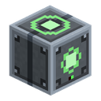
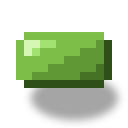

培育舱
alaindustrial:incubator
概览
培育舱——1×2 多方块：下方矮型机械底座，上方玻璃穹顶。把任何玻璃（标签 c:glass）放到 底座上——它会变成一个立体腔室，被辐照的物品在内部悬浮旋转。
机器诱变物品有三种：复制（1 → 2）、转化（A → B）或创造新模组材料。每次操作 消耗 EU/FE（LV）和辐照电荷：一个 uranium_ingot 提供 3 次尝试，之后烧成 depleted_uranium 并沉到灰渣槽。
工作模式由独立槽中的突变芯片设定——复制 / 转化 / 创造。没有芯片机器不启动；芯片本身 不消耗。结果是概率性的：成功时掷稀有度等级——普通（70 %）/ 稀有（20 %）/ 史诗（8 %）/ 传说（2 %），它给名称上色并给未来的突变加成。
| 做什么 | 怎么做 |
|---|---|
| 组装多方块 | 底座 + 顶部任意 c:glass 标签方块 → 穹顶 |
| 诱变物品 | EU/FE（LV）+ 电荷（1 个 uranium_ingot = 3 次尝试 → 1 个 depleted_uranium） |
| 模式 | 芯片槽：复制 / 转化 / 创造 |
| 突变种类 | 复制（×2）、转化（A→B）、创造（A→模组新物品） |
| 稀有度 | 每次成功——等级 普通 / 稀有 / 史诗 / 传说（70/20/8/2 %） |
| 矿渣 | 5 % 的尝试给出 irradiated_slag 而非空失败 |
能量
混合模型：来自网络（LV）的 EU/FE 加上作为辐照燃料的铀。铀不消失——变成 depleted_uranium，为未来核能阶段做准备。
| 什么 | 数值 |
|---|---|
| EU/FE 缓存 | 8000——能完整容纳最贵的操作（） |
| 最大输入 | 32 EU/FE/刻（LV） |
| 消耗 | 8 EU/FE/刻 工作时——是标准机器的四倍 |
| 燃料 | 1 个 uranium_ingot = 3 次尝试 → 灰渣槽中 1 个 depleted_uranium |
燃料槽没有铀时操作不启动；EU/FE 仅在循环期间消耗。
加工
时长和价格与突变种类绑定。培育舱是本模组最耗能的 LV 机器：每次操作最少 2400 EU/FE，而普通 机器是 200–300。
| 种类 | 成功率 | 刻 | EU/FE/次尝试 | 失败时 |
|---|---|---|---|---|
| 转化 | 0.75 | 300（15 秒） | 2400 | 输入损失，−1 电荷 |
| 复制 | 0.45 | 500（25 秒） | 4000 | 输入损失，−1 电荷 |
| 创造 | 0.25 | 1000（50 秒） | 8000 | 输入损失，−1 电荷 |
一次尝试的三种结果：
| 结果 | 概率 | 发生什么 |
|---|---|---|
| 成功 | 按种类的几率（+ 基因加成，上限 0.95） | 结果进入输出槽 + 掷等级 |
| 矿渣 | 5 % | 输入损失，输出落入 irradiated_slag |
| 失败 | 余量 | 输入损失，输出不变 |
矿渣从失败中扣除，而非成功——成功率不下降。等级仅在成功时掷出（矿渣永远是普通的）。结果 在循环结束时掷出：直到最后一刻结果都未知，无法通过取出物品来取消它。
等级。 成功时掷稀有度：普通 70 % / 稀有 20 % / 史诗 8 % / 传说 2 %。普通不留痕迹——与 原版物品堆叠。稀有及以上放置组件 mutation_grade 并给名称上色（黄色 / 青色 / 紫色）。
输入基因会燃尽。 输入物品的等级给成功率加成（稀有 / 史诗 / 传说 +5 / +10 / +15 个百分点， 总成功率上限 0.95）并燃尽——结果获得全新的等级掷骰。传说不能通过复制繁殖，只能为提高 成功率而消耗。
物品栏
五个槽：芯片、燃料（铀）、被诱变物品、结果、灰渣。结果和灰渣仅对玩家只读；灰渣槽的自动化 —仅 pull。
| 槽 | 接受 | 行为 |
|---|---|---|
| 芯片 | #（3 种芯片） | 1 件；不消耗；设定模式；空槽 = 机器不工作；自动化不取出 |
| 燃料 | #（= uranium_ingot） | 放入组装好的机器时立即取出 1 锭；电荷 = 3 次尝试 |
| 输入 | 在所选模式下有诱变配方的物品 | 1 叠；每次尝试消耗 1（失败时损失） |
| 结果 | 诱变结果或 irradiated_slag | 1 叠；仅 fill |
| 灰渣 | depleted_uranium | 1 叠；每耗尽一锭 +1；仅 pull |
界面
屏幕显示：EU/FE 储量、循环进度、辐照电荷（0–3）、五个槽和多方块组装指示器。能量条—— 左侧，辐照电荷——燃料槽右侧的垂直 pip 条，从下往上填充。上排：芯片、输入、进度箭头、 结果；下排——燃料和灰渣。
芯片槽——左上。空着时，状态行提示缺什么（「顶部需要玻璃」→「需要芯片」）。更换芯片会 重置当前操作进度。
多方块的两半都可点击：右键穹顶打开与底座相同的菜单。
方块属性
双层多方块，轮廓不同：沉重的机械下部和轻盈圆润的上部——不是「两个立方体叠在一起」。
底座——完整立方体，带凹陷的前面板、顶面的发射器环和侧面的冷却管。工作时其上方升起 发射器辉光。 穹顶——立体圆润腔室，由任意 c:glass 标签玻璃自动放置。原始玻璃类型会被记住，因此： 拆解多方块时返还恰好你的玻璃——不丢失任何东西； 彩色玻璃给穹顶染色——17 种着色变体，无需新配方：16 种染色玻璃加无色。框架和尖刺 始终是深色金属。 被辐照物品在腔室中央悬浮并缓慢旋转；工作时——粒子和辉光脉动。
配方
配方类型——三种独立类型，每种模式一个：mutation_transform、mutation_duplicate、 mutation_create。每个 JSON 描述一个输入 → 一个输出，带可选的 （覆盖）。配方中 不提及燃料——铀是机器的电荷，而非配料。
复制——4 个价值等级
每次尝试的价格固定（⅓ 锭 + 4000 EU/FE + 25 秒），因此平衡杠杆只有一个——成功率：物品越 贵，成功率越低。
| 等级 | 几率 | 物品 |
|---|---|---|
| 宝石和贵重锭 | 0.45 | 、、amethyst_shard、gold_ingot、silver_ingot、nickel_ingot |
| 矿物和普通锭 | 0.55 | coal、、lapis_lazuli、、glowstone_dust、iron_ingot、copper_ingot、tin_ingot、raw_rubber、 |
| 稀有有机物 | 0.60 | nether_wart、cocoa_beans、glow_berries、torchflower_seeds、pitcher_pod |
| 基础农业 | 0.85 | wheat_seeds、beetroot_seeds、melon_seeds、pumpkin_seeds、、 |
锭——可以，加工件——不可以。 原版和模组的锭（iron、、gold、tin、 、）可复制——这是基础原料。所有加工品（粉、板、外壳、电路、芯片、电缆、 矿石和矿石块）不可复制——否则会贬低合成链。铀不可复制（无配方）。
橡胶是约定的例外（）。 严格来说它是机器产品，按上述规则不应被复制。但石油是 有限资源：湖泊不补充，也没有办法把水变成石油，因此没有培育舱的话世界中的橡胶储量被 找到的油田数量硬性限制。复制提供了一条昂贵的可再生路径，而非免费：每次尝试花 4000 EU/FE 和 ⅓ 铀锭，几率 0.55，而从新鲜石油获得同样的橡胶只需 400 EU/FE。还有石油时——开采划算十倍； 培育舱在无油可采时才启用。
转化——水平交换
等价换等价。 按价值的升级（铁 → 金）被禁止。全部 27 个配方——几率 0.75、300 刻、 2400 EU/FE。对多物品家族（树苗、花、土壤）采用环：每件物品按圆环变为下一个，直到落出所需 的。
| 类别 | 配方 | 环 |
|---|---|---|
| 矿物 | 3 | lapis_lazuli ↔ 、 ↔ glowstone_dust、coal ↔ （全部 1:1） |
| 树苗 | 8 | 橡树 → 白桦 → 云杉 → 丛林 → 金合欢 → 深色橡树 → 樱花 → 红树 → 橡树 |
| 花 | 8 | 蒲公英 → 虞美人 → 兰花 → 茜草花 → 蓝花美耳草 → 矢车菊 → 铃兰 → 雏菊 → 蒲公英 |
| 土壤 | 5 | 草方块 → 灰化土 → 菌丝 → 草方块；沙子 ↔ 红沙 |
创造——进化阶梯
普通物品进化为模组的独特材料，沿三级阶梯。阶级越高，几率越低、操作越贵。在 2–3 阶 失败完整返还输入（仅电荷和 EU/FE 燃尽）——否则没人会冒险上到第一阶以上。
| 分支 | 阶 1 | 阶 2 | 阶 3 |
|---|---|---|---|
| 钻石——能量密度 | → 辐照钻石 | → 钻石矩阵 | → 奇点核心 |
| 水晶——光学 | amethyst_shard → 共鸣碎片 | → 聚焦透镜 | → 棱镜核心 |
| 生物——农业 | lapis_lazuli → 诱变剂粉末 | → 活诱变剂 | → 基因矩阵 |
| 核——燃料 | depleted_uranium → 不稳定同位素 | → 浓缩核心 | → 同位素浓缩物 |
| 阶 | 几率 | 刻 | EU/FE | 失败时 |
|---|---|---|---|---|
| 1（原版 → 模组材料） | 0.25 | 1000 | 8000 | 输入损失 |
| 2 | 0.15 | 1500 | 12000 | 输入完整返还 |
| 3 | 0.08 | 2000 | 16000 | 输入完整返还 |
核分支从培育舱自己的灰渣开始——耗尽的铀成为链的输入，而非垃圾。
当前版本仅包含 4 个阶 1 配方（每分支一个）： → irradiated_diamond、 amethyst_shard → resonant_shard、lapis_lazuli → mutagen_dust、depleted_uranium → unstable_isotope。阶 2–3 和来自上层材料的升级芯片——下一个版本。
进阶
等级：LV。在最初的机器（macerator/extractor）之后建造，那时有稳定的铀矿脉和 EU/FE 网络。 引入 7 个新物品：depleted_uranium、irradiated_diamond、mutagen_dust、 resonant_shard、unstable_isotope、irradiated_slag（5 % 尝试的副产物——本版本无消费者， 为未来铺垫）+ 三种模式芯片。 材料上的「基因」等级给再次突变的成功率加成（+5/+10/+15 pp）——消费者将出现在未来的 农业/核能阶段。 突变成就：「有什么变了」（任何突变物品）、「无中生有」（ 模式材料）、「五十分之一」 （传说结果）。
相关内容
铀——燃料锭。 核能主题（）——depleted_uranium 的去处。 传送器多方块——结构上的相关任务。 锯木机——可切换模式机器的范例。 太阳能板——设定模式的芯片槽的范例。
合成
有序合成

▶
培育舱